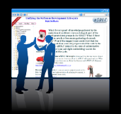

What if every pearl of knowledge gathered by the analysts and architects was an integral part of the development/test groups in the SDLC? What if there were no artefact documents gathering electronic dust? What if the support team could trust that the documentation accurately represented the code in the running system? The uSDLC project is the core of an interactive manual for implement Lean and Agile methodology across the software development life-cycle.
What if every pearl of knowledge gathered by the analysts and architects was an integral part of the development/test groups in the SDLC? What if there were no artefact documents gathering electronic dust? What if the support team could trust that the documentation accurately represented the code in the running system? The uSDLC project is the core of an interactive manual for implement Lean and Agile methodology across the software development life-cycle.

Web Visit. The fastest way to see what uSDLC is all about is to poke around http://usdlc.net. You can do everything except saving pages or saving and running code. uSDLC is hosted on cloud foundry at http://usdlc.cloudfoundry.com.

Learn more with slides and casts. View more presentations for uSDLC. The presentations provide use-cases for uSDLC. Use them to help you adapt uSDLC for your own requirements.
 Take uSDLC for a spin. Download from the link below. Drop it into an empty directory and run it. uSDLC will unpack and run. When you are done you can delete the directory and uSDLC will disappear without trace.
Take uSDLC for a spin. Download from the link below. Drop it into an empty directory and run it. uSDLC will unpack and run. When you are done you can delete the directory and uSDLC will disappear without trace.
http://download.usdlc.net

Become Involved. uSDLC is an open-source project hosted on Git-Hub. Because uSDLC is an implementation of an interactive manual, it is as easy to update documentation as code.
http://github.usdlc.net